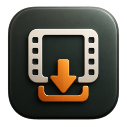

Plain Video Saver は、入力したURLから動画保存を行うmacOS用アプリです。
RustyWorks は、Plain Video Saver を通じて個人情報、利用統計、解析データ、広告識別子を収集しません。アプリには独自のユーザー追跡、広告SDK、解析SDKは含まれていません。
アプリは、使いやすさのために以下の情報をMac内に保存する場合があります。
これらは開発者のサーバーへ送信されません。
ユーザーが操作した場合のみ、アプリはSafari、Chrome、Chromium、Arc、Braveなどの現在のタブURLを取得します。ログインが必要なサイトでは、ユーザーの選択によりブラウザCookieを利用する場合があります。
Cookieは動画取得処理のためにローカルで利用され、対象サービスへのリクエストに使われます。RustyWorks がCookieを収集・保管することはありません。
Plain Video Saver は、ユーザーが入力または取得したURL、および関連する動画配信URLへアクセスします。アプリの動作には yt-dlp、ffmpeg、ffprobe、deno が含まれる場合があります。
通信先サービスのデータ処理は、それぞれのサービスの規約・プライバシーポリシーに従います。
Plain Video Saver は、DRMで保護されたコンテンツの解除を目的としたものではありません。ユーザーは、保存するコンテンツについて必要な権利または許可を持っている場合にのみ利用してください。
このプライバシーポリシーに関するお問い合わせは、info@rustyworks.jp までご連絡ください。
Plain Video Saver is a macOS application that saves videos from URLs entered or selected by the user. RustyWorks does not collect personal information, usage analytics, advertising identifiers, or tracking data through Plain Video Saver.
RustyWorks does not collect personal information, usage statistics, analytics data, advertising identifiers, or tracking data through Plain Video Saver. The app does not include its own user tracking, advertising SDK, or analytics SDK.
The app may store settings and operational data locally on the user's Mac for usability and operation.
This data is not sent to RustyWorks servers.
Only when requested by the user, the app may read the current tab URL from browsers such as Safari, Chrome, Chromium, Arc, and Brave. For sites that require sign-in, the app may use browser cookies locally if the user enables that option.
Cookies are used locally for media retrieval and for requests to the target service. RustyWorks does not collect, store, or transmit those cookies to RustyWorks servers.
Plain Video Saver connects to URLs entered or captured by the user and to related media delivery URLs. The app may include tools such as yt-dlp, ffmpeg, ffprobe, and deno for media retrieval and processing.
Data processing by third-party services is governed by each service's own terms and privacy policy.
Plain Video Saver is not intended to bypass DRM or access protected content without authorization. Users should save only content for which they have the necessary rights or permission.
For questions about this privacy policy, contact info@rustyworks.jp.